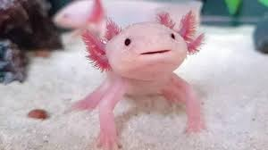
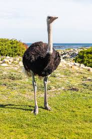
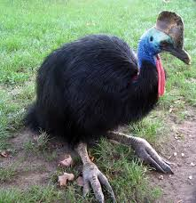

Animales exoticos
En esta pagina web hablare de unos animales raros y poco comunes, estos animales en mi opinion son muy interesantes y opino que todos los deberiamos conocer.

El ajolote es un anfibio endémico de México, conocido por su capacidad de regenerar extremidades, órganos e incluso partes de su cerebro.

El avestruz es el ave más grande del mundo y no puede volar, pero es un corredor excepcional, capaz de alcanzar velocidades de hasta 70 km/h.

El casuario es un ave grande y no voladora originaria de Australia y Nueva Guinea.

El dragón de Komodo es el lagarto más grande del mundo, alcanzando hasta 3 metros de largo y un peso de 70 kg.

El pez espada es un pez migratorio de gran tamaño, conocido por su característico "pico" alargado, que utiliza para cazar y defenderse.